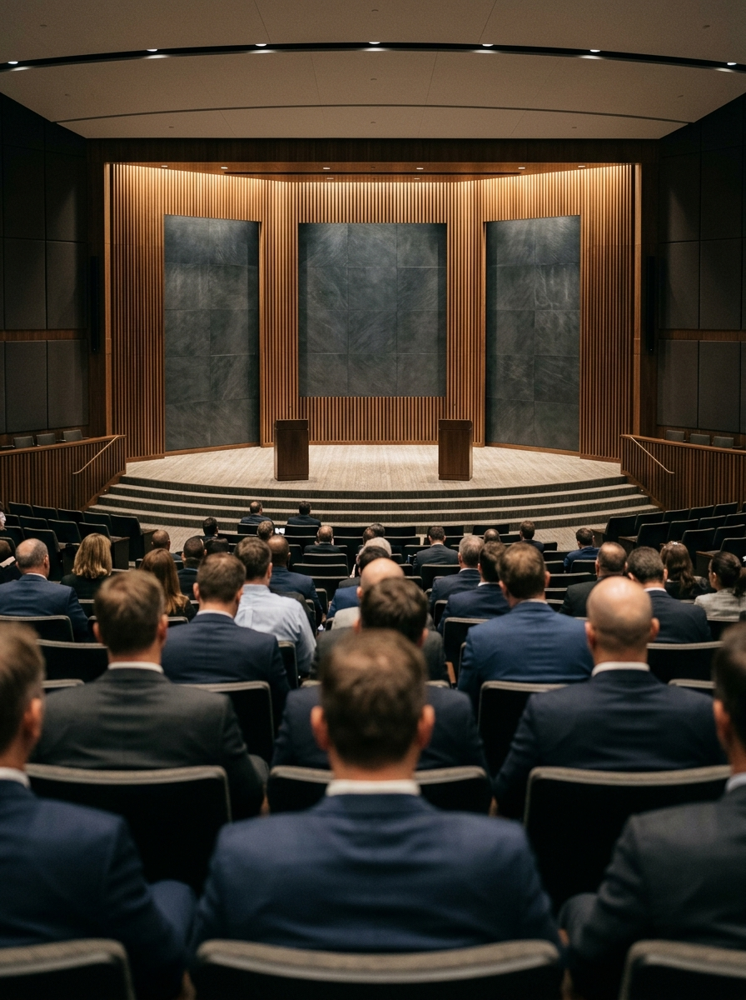
1. SAHNE · KEYNOTE
Liderlik ve Vizyon
C-level yöneticilerle yeni nesil liderlik, strateji ve kurumsal dönüşüm oturumları.
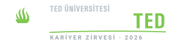
Red Zone (Fuaye), Blue Zone (Spor Merkezi), Tech&Innovation, One-to-One Meetings, Teacher+ ve Food&Beverage alanlarında QR ile gez, canlı dolulukları takip et.
Öğrencileri ve mezunları üst düzey yöneticilerle buluştururken, işveren kurumları TED Üniversitesi’nin 5 fakültesindeki yüksek potansiyelli yetenek havuzuna doğrudan davet eder.
Liderlik panelleri, teknoloji forumu, yönetici yuvarlak masaları ve kurumsal 1:1 mülakat merkezleri.

C-level yöneticilerle yeni nesil liderlik, strateji ve kurumsal dönüşüm oturumları.
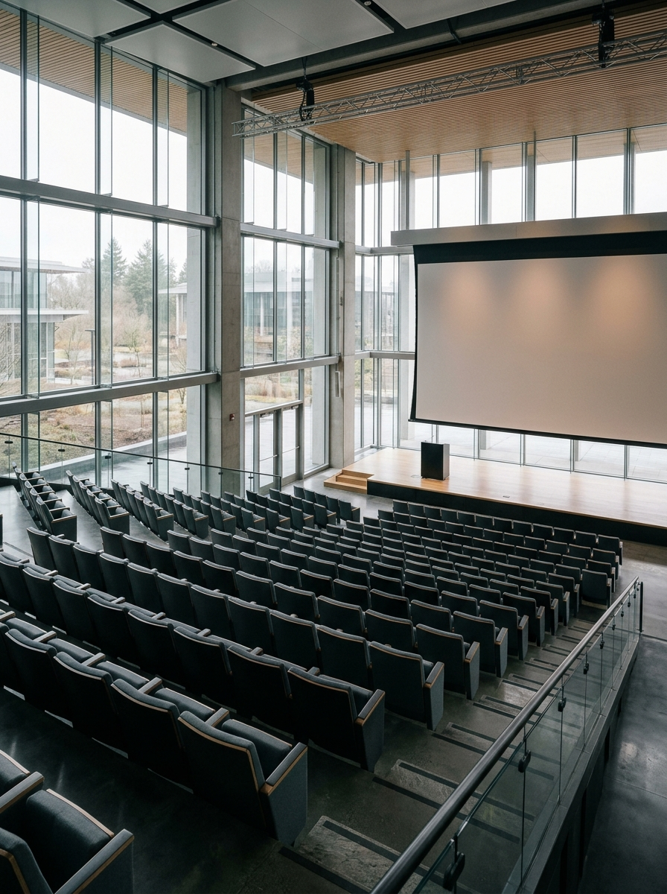
Mühendislik, veri bilimi, savunma sistemleri ve ürün yönetimi derinlemesine panelleri.
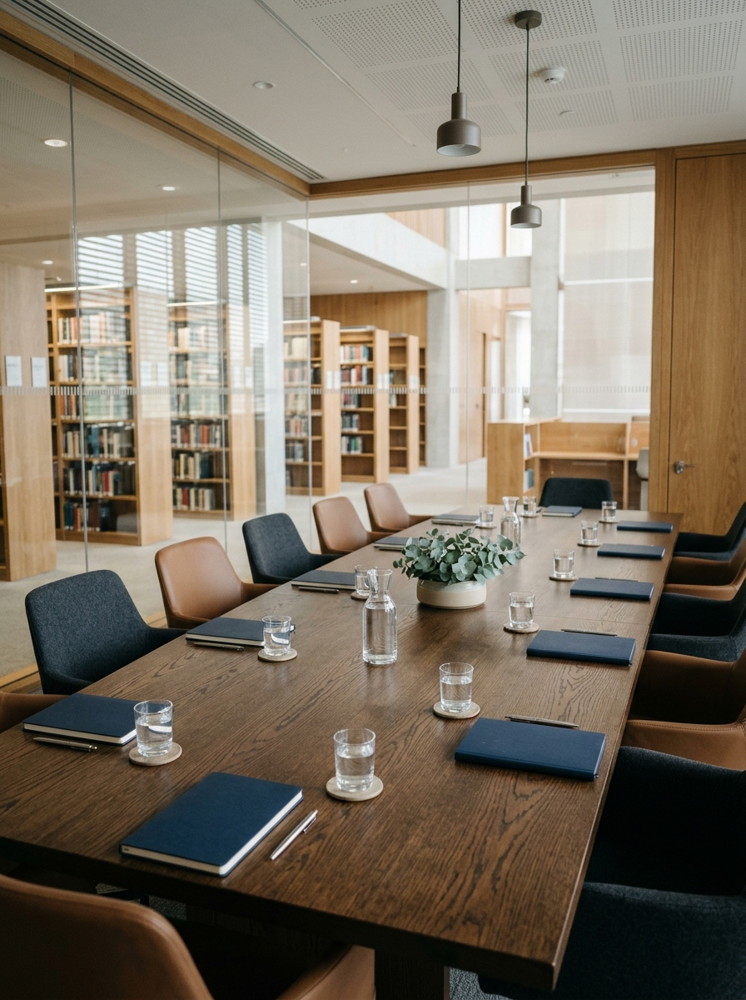
12 kişilik sınırlı gruplarda direktörler eşliğinde gerçek iş vakası çözümü ve mentorluk.
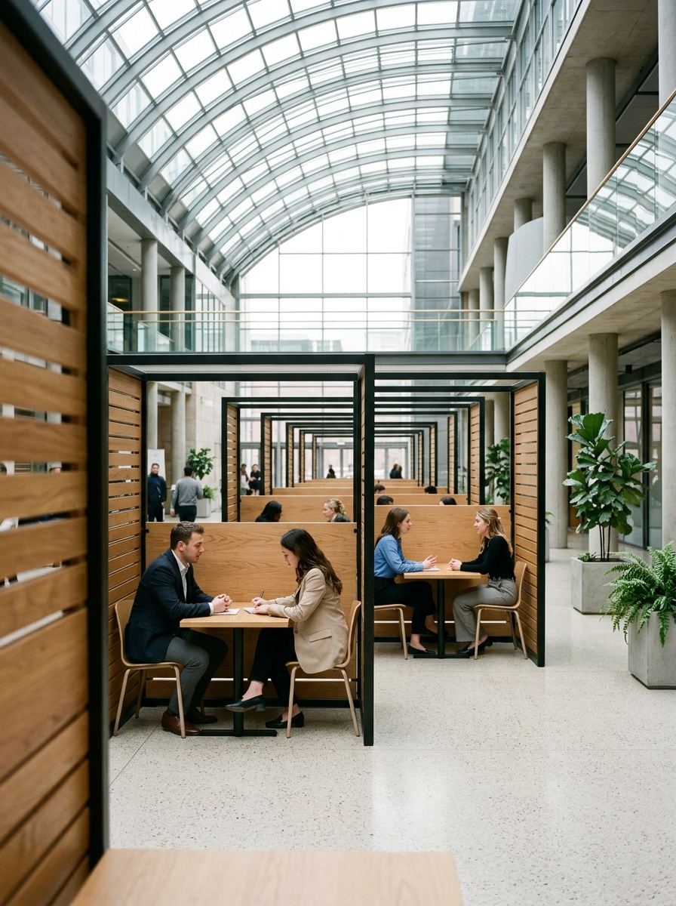
32+ seçkin kurumun İK liderleriyle randevulu mülakatlar ve CV kliniği görüşmeleri.
1. Katılım profilinizi seçiniz (Öğrenciler ve kurumlar için ücretsiz ön kayıt).
2. Katılmak istediğiniz sahneleri işaretleyiniz.
Çok Amaçlı Konferans Salonu | TED Üniversitesi Aksu Kampüsü · 09:30 – 17:00
D Blok Amfi Salon D-104 | TED Üniversitesi Aksu Kampüsü · 10:30 – 16:30
Yönetici Toplantı Odaları | TEDÜ Kütüphane Binası 2. Kat · 13:00 – 17:00
G Blok Fuaye ve Mülakat Kabinleri | TEDÜ Kampüs · 10:00 – 17:30
Tamamı İngilizce eğitim veren 5 fakültemizdeki yüksek potansiyelli öğrenci ve mezunlarımızla doğrudan kampüsümüzde buluşun; staj, yeni mezun (MT) ve tam zamanlı istihdam süreçlerinizi tek zirvede hızlandırın.
5 fakültede %100 İngilizce lisans ve lisansüstü öğrenci topluluğu.
Mezuniyet sonrası ilk 6 ayda sektör veya lisansüstü yerleşimi (Taslak).
G Blok mülakat kabinlerinde ön elemeli 15 dakikalık aday görüşmesi.
Savunma, finans, danışmanlık, teknoloji ve üretim liderlerinden katılım.
G Blok Fuaye alanında markalı karşılama noktası ve randevulu CV havuzundan birebir görüşmeler.
Seçilmiş 12 son sınıf öğrencisiyle 75 dakikalık vaka analizi ve doğrudan yetenek değerlendirmesi.
C-level yöneticiler ve teknik direktörler için keynote sunum veya sektör paneli katılımı.
Fakülte bazlı hedefli duyurular ve dönem içi iş yeri eğitimi programlarına öncelikli aday yönlendirmesi.
Red Zone (Fuaye), Blue Zone (Spor Merkezi), Tech&Innovation, One-to-One, Teacher+ ve Food&Beverage alanlarının canlı doluluklarını inceleyin.
Genel Müdür Yardımcısı, İnsan ve Kültür
ASELSANYönetim Kurulu Üyesi
Akfen HoldingVeri ve Yapay Zeka Direktörü
EY TürkiyeYetenek Kazanımı Lideri
Coca-Cola İçecek
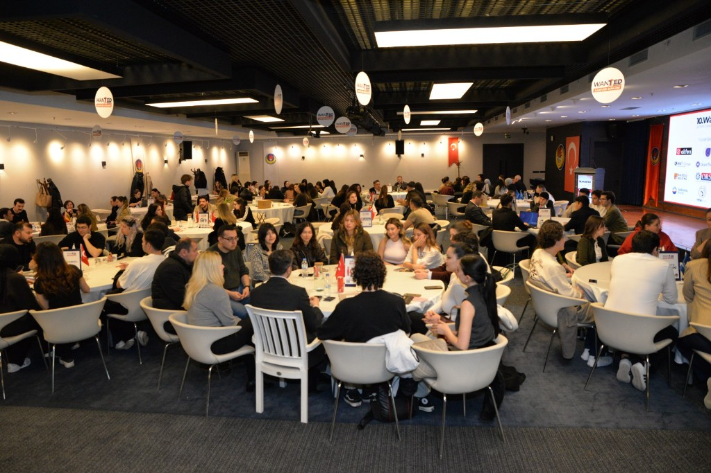
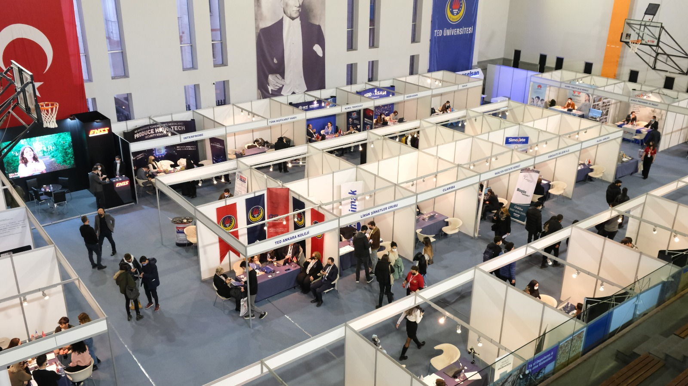
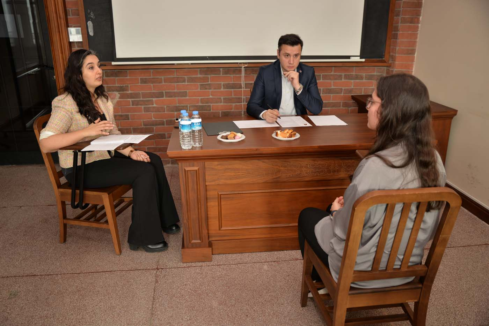
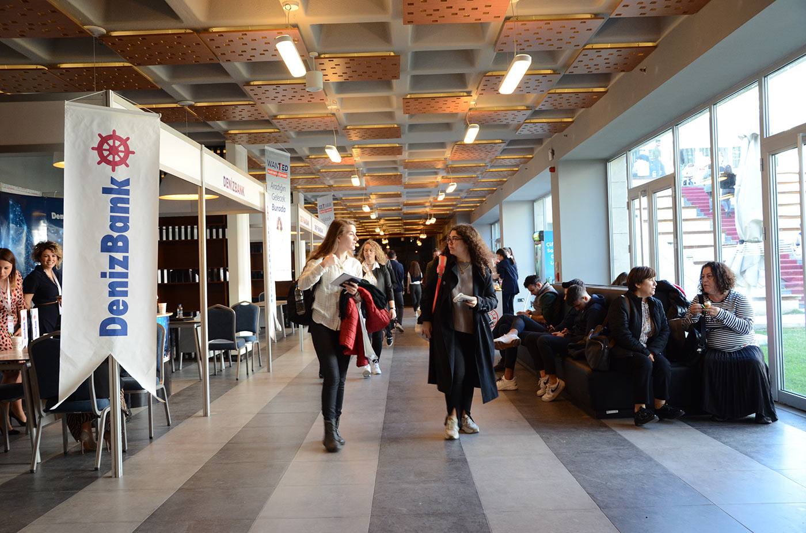
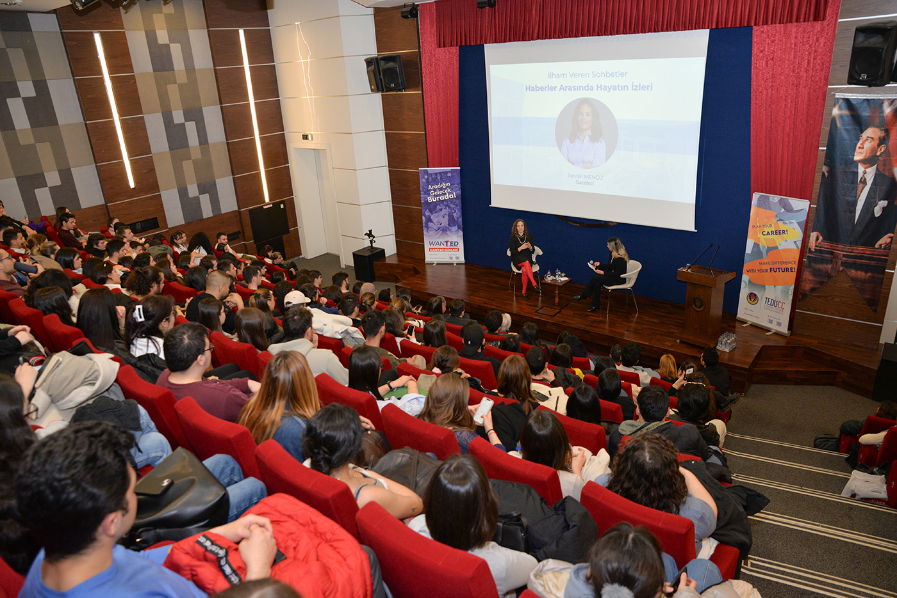
6 sahnedeki oturum akışınız, salonlardaki anlık katılımcı yoğunluğu ve QR yaka kartınız tek uygulamada.
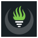
Evet. Zirve hem TED Üniversitesi öğrencileri ve mezunları hem de davetli kurumlar ve misafir katılımcılar için ön kayıtlı ve tamamen ücretsiz olarak planlanmıştır.
Yukarıdaki “Şirketler İçin · Kurumsal Portfolyo” bölümünden katılım modellerini inceleyip “Kurumsal Davet Talebi” adımıyla TEDÜ Kariyer Merkezi’ne ön talep iletebilirsiniz.
Şu an incelediğiniz sürüm SubmitTED web arayüzünün tasarım taslağıdır. Kapı giriş sensörleri ve QR akreditasyonuna bağlı canlı doluluk uygulaması ikinci geliştirme fazında yayına alınacaktır.